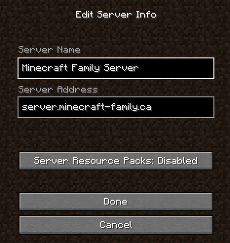
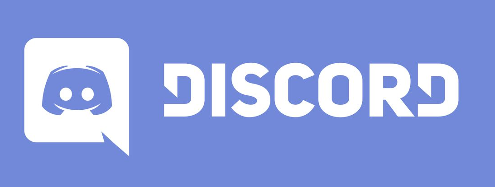

Welcome to the Minecraft Family Server
Technicalities
Everything you need to connect to the server and understand which additional tools are available to you
Server Status
How to connect to the server
The easy way
- Download MultiMC and install it on your computer
- Copy the URL of the lastest configuration file from here
- Paste the URL into MultiMC (Add instance / import from zip)
The normal way
- You need a Minecraft client. Any client will work (native, MultiMC, Badlion, etc.) as long as it's Java.
- The current version of the server is 1.19.2. It is very important for your client to run the exact same version than the server
- Your Minecraft Player needs to be approved (whitelisted) on the server. Ask a friend or join the Discord server (link down below) if you want be authorized on the server.
Once in-game you need to connect to a new server.
The address of the server is: server.minecraft-family.ca
In the Multiplayer section of the game, it should look like this:


Here are the reasons why it's important to join the Discord Community
- See how much fun other players are having
- Watch Familybot get busy when something happens on the server (player joins, player dies...). His favorite channel is #familybot-is-chatty
- Chat and talk with other players outside of the game
- Share your best screenshots
- Know all about the server status (planned maintenances, upgrades)
- And much more!
Once you join the Discord Server, you will be restricted to #Lobby channel until an administrator grants you access to the rest of the Discord Server
Rules
For maximum fun, here are some simple rules that we all need to follow
- Create your base at a reasonable distance from the other players (say 500+ blocks). Some of your neighbors might be eager to expand! Always remember the Nether is here for traveling quickly from base to base.
- Visit the world, marvel at the creations of others! But a creeper just exploded in your face, and it has damaged something that does not belong to you? Fill up the hole, repair the damage. It's really not possible? Leave an apology, mistakes happen.
- Also, don't modify other people's creations without their permission.
- In a same way, never ever steal inside others chests, even if they are not hidden.
- Use whatever client mods you want, as long as it does not impact the other player's experience.
- PVP is enabled on the server, but don't kill other players without their consent.
- You are in a mood for a good battle? Head over to the PVP Arena and have some fun!
- Don't loot community farms (e.g. the unlimited iron farm). Take only what you need for your projects, leave some for others.
- You want to submit an idea, need an upgrade, want to organize an event like a PVP fight, post in the Channel Discord called #suggestions
- A question, need help with the server, a trusted friend wants to join? Ask Freetonio
- Respect the "bubble" of the players when they don't want to be bothered at home.
- Be polite and respectful to each other.
- Any misuse of language, or bad attitude will be punished
- First by a warning to the player at fault
- Then by a ban more or less long depending on the importance of the fault
- Any third offence is sanctionned by a permanent ban.
- "TRUST BUT VERIFY". Remember that all actions of all players are recorded at all times by the server for eternity!
The most important rule of all: Have Fun!
Add ons
Dynamic world map
The dynamic world map is available in the menu or hereHow to get your points of interest in the Dynamic world map
Three type of points of interest are currently supported:- Base
- Farm
- Landmark
Then, place a sign made of any wood and write the type of tag in brackets on the first line (for example [Base]) and the text you want to be displayed on the world map in the following three lines
For example:

How to remove your points of interest from the Dynamic world map
Simply remove the sign in-game.How much time does it take for a POI to show-up on the Dynamic Map?
The map is updated once a day during the night, north America time.Plugins
- When a mob or a player is killed, his head will sometimes fall on the ground (collect them or use them to decorate your buildings!)
- 50% of the players must sleep for the night to pass
- It is possible to teleport directly to your home from anywhere on the server. Use the /sethome command to set the coordinates of your house. Use the command /home to teleport to your house. Be careful, this command costs 50$.
- If you want to join a friend quickly on the server the commands /tpa, /tpaccept and /tpdeny are available. These commands are free.
- There is a currency plugin. It is especially useful when you have extra resources that you want to sell. Then buy rare items from the marketplace or use special orders that cost money. Watch this video to understand how that plugin works: